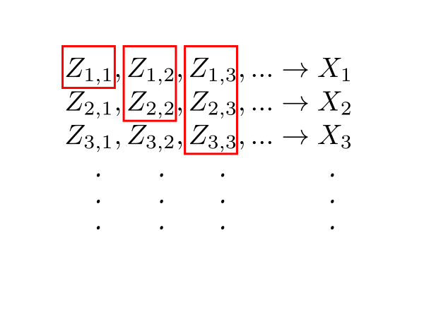

Proof: Enough to show simple random variables $Y_n$ such that $Y_n\uparrow X $ and $Y_n\leq X_n.$
[Because...]Let $(Z_{n,k})_k$ be a simplification of $X_n.$We already know $E(Y_n)\uparrow E(X).$ But $E(X_n)$ is sandwiched between $E(Y_n)$ and $E(X).$
| Think of the $Z_{n,k}$'s like an infinite "matrix". |
|---|
 |
|---|
| How $Y_n$'s are computed |
[Because...]Also $Y_n\leq X_n.$$$\begin{eqnarray*} Y_{n+1} & = & \max\{Z_{1,n+1},...,Z_{n+1,n+1}\}\\ & \geq & \max\{Z_{1,n+1},...,Z_{n,n+1}\}~~\left[\mbox{$\because$ superset cannot have smaller max}\right]\\ & \geq & \max\{Z_{1,n},...,Z_{n,n}\}, \end{eqnarray*}$$ by non-decreasing property of $Z_{n,k}$ w.r.t. $k.$
[Because...]Finally, $Y_n\uparrow X.$$Z_{k,n}\leq X_k\leq X_n.$
[Because...]This completes the proof. [QED]We have $Y_k\leq X_k\leq X$. So $(Y_k)$ is a non-decreasing sequence bounded from above. So $\lim_k Y_k$ exists and $\lim_k Y_k\leq X$. We have $Z_{n,k} \leq Y_k$ for $k\geq n$. Taking limit as $k\rightarrow \infty,$ we have $X_n\leq \lim_k Y_k.$ Now taking limit as $n\rightarrow \infty,$ we have $X\leq \lim_k Y_k.$ Hence $\lim_k Y_k= X.$
EXAMPLE 1: We consider $[0,1]$ equipped with the $Unif[0,1]$ probability distribution. Here density exists in a Riemann sense. Let $X$ be the Dirichlet function on $[0,1].$
Since ${\mathbb Q}\cap[0,1]$ is countable, we may enumerate it as $\{r_1,r_2,...\}.$ Take $X_n=1_{\{r_1,...,r_n\}}.$ Then the Riemann integral of each $X_n$ is $0.$ The $X_n$'s increase to $X.$ But $X$ is not Riemann integrable. ■ However, it may be shown that if the limit is a Riemann integrable, then MCT holds for Riemann integration also.EXAMPLE 2: Here we shall work with $[0,1]$ again, equipped with $Unif[0,1]$ probability distribution. Let $X_n = \frac{1}{nx}$ (set $X_n=0$ at $x=0$). Also, take $X\equi0.$ Then $\forall \omega\in[0,1]~~X_n(w)\downarrow X(w).$ But $E(X_n)=\infty$ though $E(X)=0.$
The problem is that the Lebesgue integral is defined as sup of approximations from below. ■EXERCISE 1: Give $X_n, X$ on $[0,1]$ equipped with $Unif[0,1]$ such that
EXERCISE 2: If $(X_n)$ is a nonincreasing sequence of nonnegative random variables converging to some random variable $X,$ and $E(X_1)<\infty,$ then show that $E(X_n)\downarrow E(X).$ What if the assumption $E(X_1)<\infty$ is dropped?
EXERCISE 3: Suppose that $X_n$'s are nonnegative random variables. Show that $$E(\sum_1^\infty X_n) = \sum_1^\infty E(X_n).$$
Proof: Let $Y_n = \inf\{X_k~:~k\geq n\}.$
Then, by the definition of $\liminf$, we have $Y_n\uparrow \liminf X_n.$ So, by MCT, $E(Y_n)\rightarrow E(\liminf X_n).$ Now $Y_n \leq X_n,$ and hence $E(Y_n) \leq E(X_n).$ Hence $$E(\liminf X_n) \leq \liminf E(X_n),$$ as required. [QED]EXERCISE 4: Consider $U\sim Unif(0,1).$ Let $X_n = U^n$ for $n\in{\mathbb N}$. Compute both sides of Fatou's lemma explicitly.
EXERCISE 5: Again let $U\sim Unif(0,1).$ Let $X_n=\left\{\begin{array}{ll}n&\text{if }U\in\left(0,\frac 1n\right)\\ 0&\text{otherwise.}\end{array}\right.$. Compute both sides of Fatou's lemma explicitly.
EXERCISE 6: Let $U\sim Expo(1).$ Let $X_n = \left\{\begin{array}{ll}e^x&\text{if }x\in(n-1,n]\\ 0&\text{otherwise.}\end{array}\right.$ for $n\in{\mathbb N}.$ Compute both sides of Fatou's lemma explicitly.
EXERCISE 7: Suppose that $(X_n)$ is a sequence of random variables with $X_n\rightarrow X.$ If $\forall n\in{\mathbb N}~~ E(X_n)\in [2,5]$, then which of the following must be true?
EXERCISE 8: Give examples to show that equality or strict inequality may prevail in Fatou's lemma.
EXERCISE 9: We proved Fatou's lemma from MCT. It is possible to prove MCT using Fatou's lemma quite easily. How?
EXERCISE 10: Let $(X_n)$ be nonnegative random variables such that $\forall n\in{\mathbb N}~~E(X_n) \leq M$ for some $M\in{\mathbb R}.$ If $X_n\rightarrow X,$ then show that $E(X) < \infty.$
EXERCISE 11: Let $(X_n)$ be nonnegative random variables such that $\forall n\in{\mathbb N}~~E(X_n) < \infty.$ If $X_n\rightarrow X,$ then must it be true that $E(X) < \infty?$
Proof: Clearly, $|X|\leq Y.$
So, by triangle inequality, $|X_n-X|\leq |X_n|+|X|\leq 2Y.$ Let $Z_n = 2Y-|X_n-X|.$ Then $Z_n$'s are all nonnegative random variables. Applying Fatou's lemma to $(Z_n)$, we have $$E(\liminf Z_n)\leq \liminf E(Z_n).\hspace{1in} \mbox{(*)}$$ Now $$\liminf Z_n = 2Y-\limsup|X_n-X| = 2Y,$$ and $$\liminf E(Z_n) = 2E(Y)-\limsup E|X_n-X| .$$ So (*) becomes $$2E(Y)\leq 2E(Y)-\limsup E|X_n-X|,$$ or $\limsup E|X_n-X|\leq 0.$ Hence $E|X_n-X|\rightarrow 0,$ as required. [QED]Proof:Just a restatement of the DCT.[QED]
EXERCISE 12: Show that a characteristic function must also be uniformly continuous.
Proof: To show $\frac{E(X(t+h)) - E(X(t))}{h} \rightarrow E(X'(t))$ as $h\rightarrow 0.$
Enough to show that for every $(h_n)$ with $h_n\rightarrow 0$ we have $\frac{E(X(t+h_n)) - E(X(t))}{h_n} \rightarrow E(X'(t))$ as $n\rightarrow \infty.$ Take any such $(h_n).$ Define $Y_n = \frac{X(t+h_n) - X(t)}{h_n},$ and $Y = X'(t).$ Then by the given condition $Y_n\rightarrow Y$. Also by the mean value theorem $Y_n = X'(t_n)$ for some $t_n$ between $t$ and $t+h_n.$ Hence $|Y_n| = |X'(t_n)| \leq Z,$ which has finite expecation. Hence $(Y_n)$ is a dominated sequence. So, by the DCT, $E(Y_n)\rightarrow E(Y),$ completing the proof. [QED]